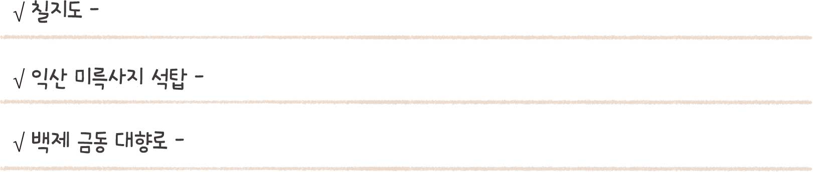
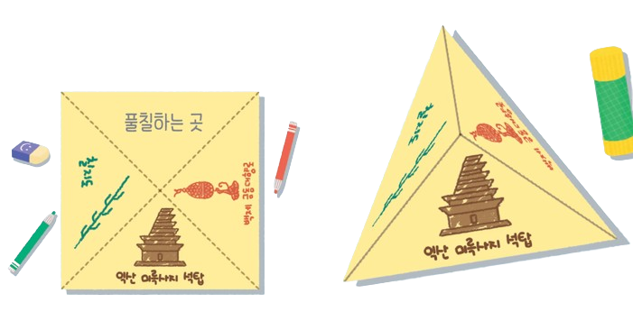

창의 융합 활동
고대의 국가유산 소개 자료 만들기

이 주제에서 배운 나라를 하나씩 선택하여 해당 나라의 국가유산을 소개하는 피라미드 책을 만들어 보자.
활동 방법
-
14명씩 모둠을 이룬 뒤 국가유산을 소개하고 싶은 나라를 하나씩 정한다.
고구려
백제
신라
발해
-
2선택한 나라의 국가유산 중 소개하고 싶은 것을 세 가지 고르고, 그 특징을 정리해 본다. 백제가 일본(왜)에 보낸 칼로, 백제와 일본이 교류하였음을 보여 줍니다. 돌로 쌓아 만들었지만, 목탑의 형식과 유사합니다. 사람과 동물 등 여러 모양으로 향로의 뚜껑을 장식하였습니다.
-
3삼각책 위에 정리한 내용을 쓰고 알맞은 그림을 그려 완성한다.
-
4모둠원 4명의 삼각책을 붙여 피라미드 책을 완성하고, 이를 살펴보며 나라별 국가유산의 특징을 알아본다.